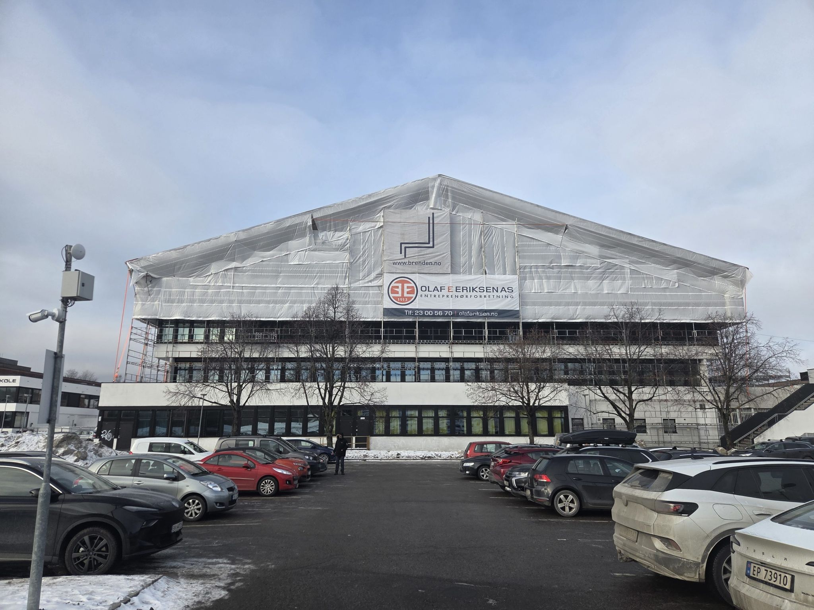
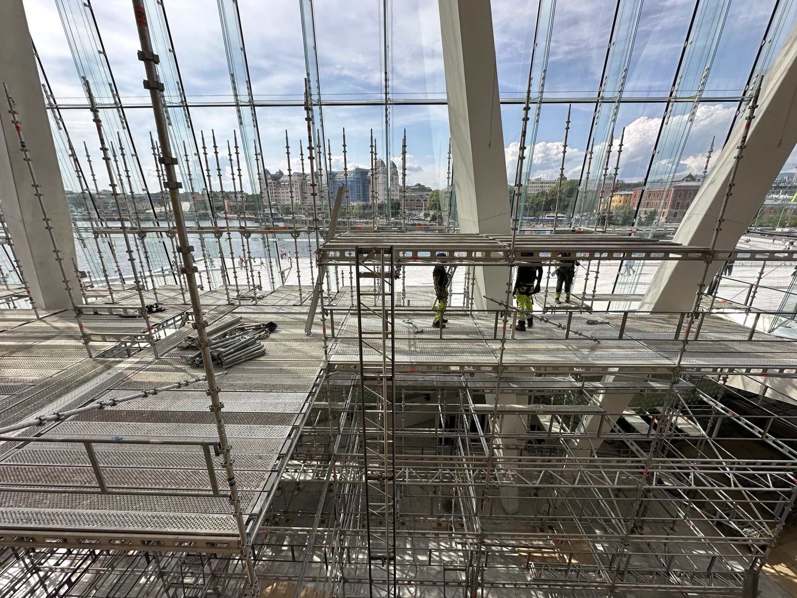
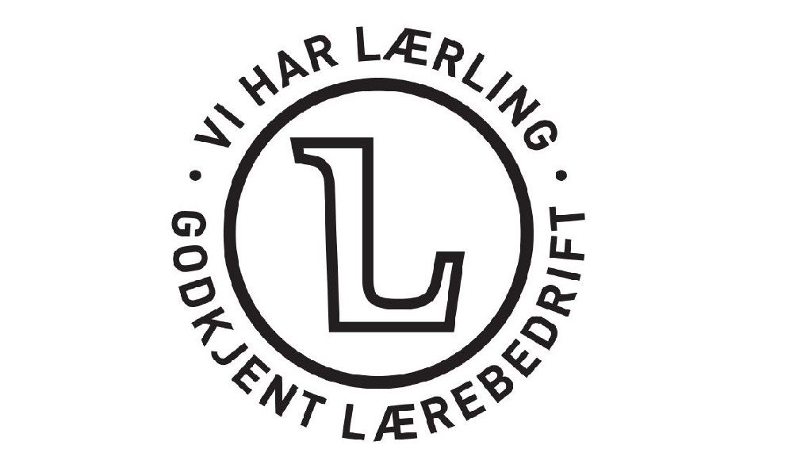
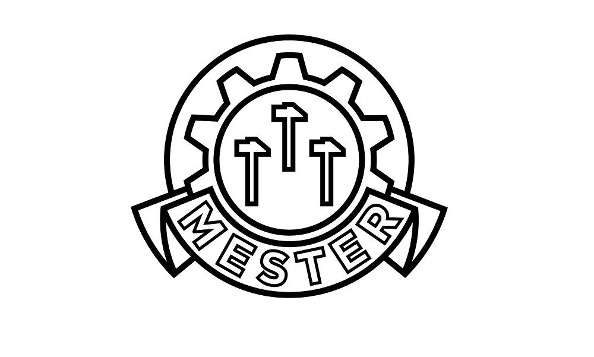

Stillas
Vi avklarer omfang og tid før vi starter.

bygg · Norge
Som en fjerdegenerasjons stillasbedrift med mange års erfaring tilbyr vi alle slags stillas-løsninger til alle formål.
Tjenester

Vi avklarer omfang og tid før vi starter.

Du har én kontakt gjennom hele saken.

Vi sier hva det koster før vi begynner.
Slik kunne det se ut
Byggetiden er lang, og byggherren sitter på utsiden og lurer på hvordan det går. En side med bilder, milepæler og neste steg gir trygghet — og færre telefoner om status.
Følg bygget fra første spadetak
Fra byggeplassen
Du beskriver hva du trenger, og vi svarer med hva det krever.
Vi blir enige om omfang, pris og når det skjer.
Vi gjør jobben og går gjennom resultatet med deg.
Arbeid underveis


Ordrett fra nettsiden deres
Med takoverbygg og presenning rundt hele stillaset får man et tørt arbeidsmiljø på innsiden av stillaset, da kan man jobbe uavhengig av vær og vind. Dette kan i mange tilfeller gi dramatisk økt effektivitet på prosjektet som igjen gir høyere avkastning og økt byggekvalitet på grunn av tørre forhold.
I med at taket kun er beregnet for å tåle 10cm med snø har vi også snøvakt hvor på dager med stort snøfall vil vi også kjøre rundt og måke snø om nødvendig slik at konstruksjonen ikke blir overbelastet.
Disse kontrollene blir ikke belastet kunden, men om vi må foreta utbedringer vil dette bli fakturert på timer.
Beskriv saken, så svarer vi med hva det krever og hva det koster.
Send en henvendelse